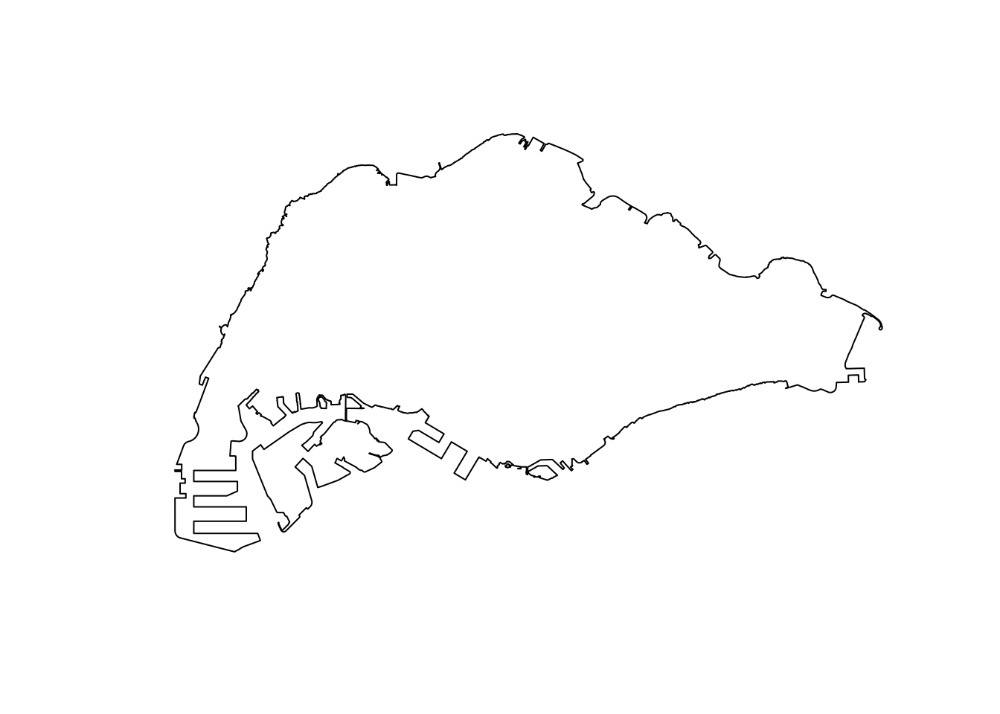
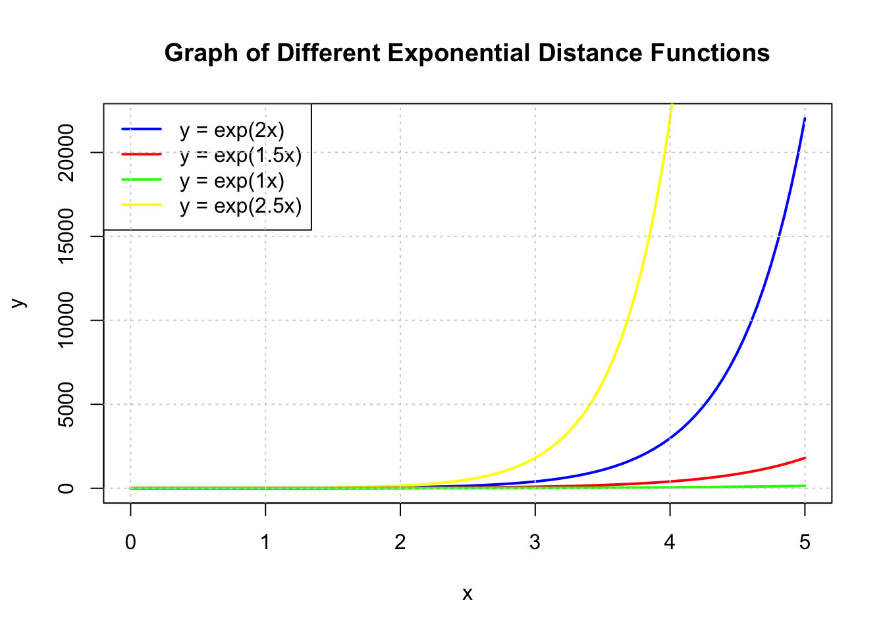
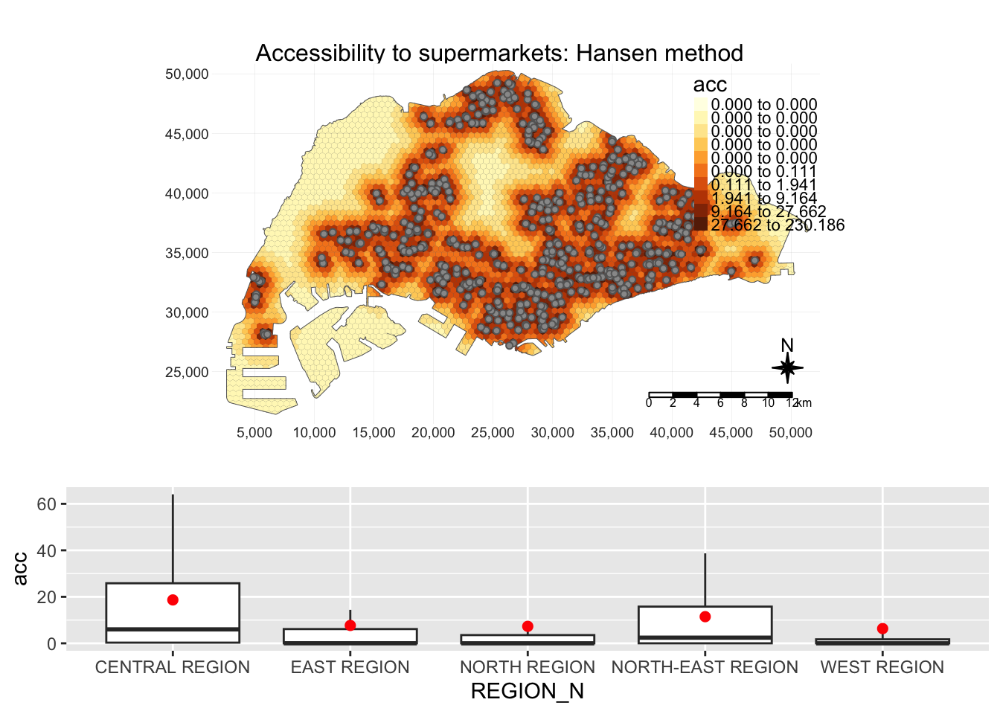

pacman::p_load(tidyverse, tmap, sf, smoothr, SpatialAcc, hash, cowplot)Take-Home Exercise 3
Take-Home Exercise
Take-Home Exercise 3
Overview and Objectives
In this takehome exercise, I will be prototyping my accessibility modelling module for the Geospatial Analytics Project.
This prototype module aims to
Model the accessibility to various amenties across Singapore
Show the distributions of accessibility to amenities across regions
Choose between Hexagonal and Square Grids
Change the desired grid size
Choose different distance decay functions
Choose between Hansen’s, KD2SFCA and SAM accessibility modelling methods
Data Wrangling
Dependencies
Given that this application will be deployed on shiny, I tried to reduce the number of packages to only those that are absolutely necessary or provide sufficient value to the project.
Tidyverse
- Includes common packages for datascience, particularly ggplot2, tibble and dplyr
tmap
- Generates colorful and easy to use maps to help our users tell the stories that they want to
sf
- Essential for handling spatial features
smoothr
- Used to remove holes and slithers in geometry
SpatialAcc
- The most promiently featured package in this project. SpatialAcc provides a set of spatial accessibility modelling methods.
hash
- I use this to make simple key value pairs, which will map shorter parameter names to files. Using the right data structures can make my code simpler and cleaner
cowplot
- Used to combine different types of plots, e.g. tmap and ggplot
Datasets
Spatial
-
- Government Data on Supermarkets. This dataset contains the license names of each supermarket, ensuring a certain degree of standardisation and allows us to check the distribution of different supermarket types in Singapore.
-
- Government Data on Wet Markets and Food Centres, including Hawker Centres. This dataset contains data on the type and number of stalls in each location.
Master Plan 2019 Subzones (2019)
- Geospatial data consisting of Singapore’s planning areas, subzones, and boundaries. This dataset will be used to define the boundaries of singapore and its subregions and mapped to the data in the population census.
Land & Transport Singapore (LTSG) dataset (2022)
- An extensive dataset containing the locations of various points of interest around Singapore. For this dataset, only points relevant to daily life for the average person will be considered.
Aspatial
Singapore Census of Population (2020)
- Population of various neighbourhoods and the distribution of age groups within. The distribution of age groups will not be used in this segment. Only the total population will be considered for each region.
Master Plan Subzone Dataset
The master plan subzone dataset contains Singapore’s geometry and the boundaries of each planning zone and subzone. These correspond with other aspatial datasets such as the population census.
To prepare the MPSZ dataset, several steps are taken
Parse the kml fields
Remove the z coordinate
Fix the CRS
Fix invalid geometry
Write it to an rds file
mpsz <- st_read("data/geospatial/MasterPlan2019SubzoneBoundaryNoSeaKML.kml") %>%
mutate(Match=str_match_all(Description,"<td>(.*?)</td>")) %>%
mutate(Match=map(Match, ~ .[,2])) %>%
mutate(Match=map(Match,setNames,c("SUBZONE_NO","SUBZONE_N","SUBZONE_C", "CA_IND", "PLN_AREA_N", "PLN_AREA_C", "REGION_N", "REGION_C", "INC_CRC", "FMEL_UPD_D"))) %>%
unnest_wider(Match) %>%
st_as_sf() %>% dplyr::select('Name', 'geometry', 'SUBZONE_NO', 'SUBZONE_N', 'PLN_AREA_N', 'PLN_AREA_C', 'REGION_N', 'REGION_C') %>%
st_zm() %>%
st_transform(crs = 3414) %>%
st_make_valid() %>%
write_rds('data/rds/mpsz.rds')Reading layer `URA_MP19_SUBZONE_NO_SEA_PL' from data source
`/Users/matthewho/Work/Y3S2/IS415/Website/IS415/TakeHomeEx/TakeHomeEx3/data/geospatial/MasterPlan2019SubzoneBoundaryNoSeaKML.kml'
using driver `KML'
Simple feature collection with 332 features and 2 fields
Geometry type: MULTIPOLYGON
Dimension: XY, XYZ
Bounding box: xmin: 103.6057 ymin: 1.158699 xmax: 104.0885 ymax: 1.470775
z_range: zmin: 0 zmax: 0
Geodetic CRS: WGS 84After parsing the mpsz dataset, we can now combine it with the population census of 2020 dataset.
Disclaimer:
The Population Census dataset, referred to as pop2020 in this take home exercise was created by my teammate during the data wrangling process for our project. All data wrangling mentioned in this take-home exercise is my original work. Data that was not wrangled by me will be marked and imported as an rds.
Population Census Dataset Integration
In some accessibility modelling works, demand is naively and uniformly allocated across the relevant geometry, i.e allocating a constant demand over each part of the study area. This would cause the result to be similar to Kernel Density Estimation.
To avoid this issue, and to go beyond naive demand estimation, I have decided to allocate ‘demand’ to each subzone or planning area according to the record population of the area in the population census dataset.
This will be done by mapping the population estimations of the census to the corresponding polygons in the mpsz dataset. This will be conducted on two levels of granularity.
- Subzones
- Planning Areas
To incorporate a demand estimation into accessibility modelling, I determine a population density estimate for every polygon.
To prepare the dataset at the planning area level, we can - Extract the total population from the “Total” row, converted to a numerical value - Accumulate the collective populations and sub-polygons of every planning area
- Merge the mpsz and population datasets based on planning area names
- Derive a population density estimate, divide the population of the area by the area
pop2020_pa <- read_rds('data/rds/pop2020.rds') %>%
mutate(Total = as.numeric(Total)) %>%
group_by(Planning_Area) %>%
summarise(Total = sum(Total), .groups = "drop")
mpsz_pa <- mpsz %>%
group_by(PLN_AREA_N) %>%
summarise(geometry = st_union(geometry), .groups = "drop") %>%
merge(pop2020_pa, by.x="PLN_AREA_N", by.y="Planning_Area") %>%
mutate(Total = as.numeric(Total),
area = st_area(geometry),
pop_dens = Total / area)
mpsz_pa$area <- st_area(mpsz_pa$geometry)
mpsz_pa$pop_dens <- mpsz_pa$Total / mpsz_pa$area
write_rds(mpsz_pa, 'data/rds/mpsz_pa.rds')- This process is similar to the aforementioned planning area population census integration.
pop2020_sz <- read_rds('data/rds/pop2020.rds') %>%
mutate(Total = as.numeric(Total)) %>%
group_by(Subzone) %>%
summarise(Total = sum(Total), .groups = "drop")
mpsz_sz <- mpsz %>%
group_by(SUBZONE_N) %>%
summarise(geometry = st_union(geometry), .groups = "drop") %>%
merge(pop2020_sz, by.x="SUBZONE_N", by.y="Subzone") %>%
mutate(Total = as.numeric(Total),
area = st_area(geometry),
pop_dens = Total / area)
mpsz_sz$area <- st_area(mpsz_sz$geometry)
mpsz_sz$pop_dens <- mpsz_sz$Total / mpsz_sz$area
write_rds(mpsz_sz, 'data/rds/mpsz_sz.rds')Getting Mainland Singapore
Given that the outer islands are not relevant to accessibility, since traversing water is significantly different from land travel. The population of these island is also low enough that they are unlikely to affect the results of our modelling process.
Reference: Matt’s TakeHome Exercise 1
mainland_sg <- st_union(mpsz_pa) %>%
st_cast("POLYGON")
mainland_sg <- mainland_sg[c(15)] %>%
fill_holes(units::set_units(1, "km^2")) %>%
st_as_sf() %>%
write_rds('data/rds/mainland_sg.rds')
plot(mainland_sg)
Grid Generation Process
The accessibility modelling process requires a grid. This grids segment the relevant study area into polygons of various sizes, typically hexagons or squares. Hexagons have the added benefit of supporting diagonal adjacency.
For the project module, I would like to provide grid options such as size and shape of the grid. Since the grid generation process is relatively unchanging but time consuming, the grids will be pre-calculated with several parameters and combined with other dynamic elements at runtime.
The follow functions have been written with the project module in mind. This section will discuss the design of each of these functions before a technical demonstration of these functions.
Function to add “demand”
A grid polygon, such as a square or hexagon, may overlap the singaporean mainland partially or overlap multiple sub-areas at once. Based on the concept of population density, a grid with a partial overlap with a subzone or planning area should have a lower population estimation than a grid with a full overlap. A grid’s population should also be a function of the populations of every zone it overlaps as well.
Therefore, I have designed the following functions to allocate density to each grid polygon.
Given the set of \(n\) grid polygons \(G = \{g_0, g_1, ..., g_n\}\), and set of \(m\) subzone or planning areas \(Z = \{z_0, z_1, ..., z_m\}\).
The population of a grid \(g_i\) is given as \(Pop(g_i)\), The density of a subzone or planning area \(z_i\) is given as \(Dens(z_i)\) The area of the intersection between a grid \(g_i\) and subzone or planning area \(z_i\) is given as \(AreaInt(g_i, z_i)\)
\(Pop(g_i) = \sum^m_{j=0} AreaInt(g_i, z_j) * Dens(z_j) \quad \forall g_i \in G\)
This function can be compared to a weighted mean of populations, weighted by intersection area and is implemented below.
The result is a grid with a field ‘demand’ corresponding to the result of this function.
add_weights <- function(grids, pop) {
joined <- st_join(grids, pop, join = st_intersects) %>%
mutate(intersect_area = st_area(x),
demand = intersect_area * pop_dens) %>%
st_drop_geometry()
grids <- grids %>%
left_join(joined %>%
group_by(ID) %>%
summarise(total_demand = sum(demand)),
by = "ID") %>%
mutate(demand = ifelse(is.na(total_demand), 0, total_demand)) %>%
select(-total_demand)
}Make a grid over mainland Singapore
This function generates a grid over the bounding box of mainland Singapore. However, most of the bounding box covers irrelevant areas, or the ocean. We reduce the grid, and cut grid polygons to fit the outline of mainland Singapore.
References: https://r-spatial.github.io/sf/reference/st_make_grid.html
sg_2_grid <- function(sg, g_size, is_square, name, pop) {
grids <- st_make_grid(sg, cellsize = g_size, square = is_square) %>%
st_intersection(mainland_sg) %>%
st_as_sf() %>%
mutate(demand = 0, ID = row_number())
grids_w_demand <- add_weights(grids, pop) %>%
rename(geometry = x)
write_rds(grids_w_demand, paste(name, '.rds', sep = ""))
return(grids_w_demand)
}Generate the grids and distance matrices
This wrapper function called the aforementioned functions to generate grids of different sizes and shapes and saves them as rds files to be loaded at runtime.
References: https://www.rdocumentation.org/packages/stats/versions/3.6.2/topics/dist https://www.rdocumentation.org/packages/geosphere/versions/1.5-18/topics/centroid
grids_and_dist_matrices <- function(sg, pop, g_size, is_square, subz) {
name <- paste('data/rds/grid_', g_size, ifelse(is_square, "_square", "_hexagon"), ifelse(subz, "_sz", "_pa"), sep = "")
grid <- sg_2_grid(sg, g_size, is_square, name, pop)
return(grid)
}Writing the grids with population as demand
Multiple grids of varying sizes and shapes weighted by subzone or planning area populations can be easily generated by calling the functions as done below.
for(di in c(250, 500, 750, 1000)) {
grids_and_dist_matrices(mainland_sg, mpsz_sz, di, FALSE, TRUE)
grids_and_dist_matrices(mainland_sg, mpsz_sz, di, TRUE, TRUE)
grids_and_dist_matrices(mainland_sg, mpsz_pa, di, FALSE, FALSE)
grids_and_dist_matrices(mainland_sg, mpsz_pa, di, TRUE, FALSE)
}Functional Demo
In this functional demo, each function and its code have been called sequentially to illustrate the flow of how the data wrangling results in useful information.
demo <- grids_and_dist_matrices(mainland_sg, mpsz_sz, 500, FALSE, TRUE)
tm_shape(demo) +
tm_fill(col='demand',
n = 7,
style = "quantile",
border.col = "black",
border.lwd = 1,
na.rm = TRUE)Step by Step Demo
Generating the grid
Observe that the results of st_make_grid create a grid over the entire bounding box of the study area.
grids <- st_make_grid(mainland_sg, cellsize = 500, square = FALSE)
plot(grids)After using st_intersection to remove irrelvant hexagons and trim hexagons to fit the countours of mainland Singapore, we introduce the demand parameter to each hexagon. Each hexagon is also assigned a numerical identifier to make joining processes later easier. At this state, the demand is uniformly 0 since the population of each area has not been accounted for yet.
Trimming the Grid
grids <- grids %>%
st_intersection(mainland_sg) %>%
st_as_sf() %>%
mutate(demand = 0, ID = row_number())
tm_shape(grids) +
tm_polygons(col='demand',
n = 7,
style = "quantile",
border.col = "black",
border.lwd = 1,
na.rm = TRUE)Singapore’s Population Density
The population of Singapore can be seen to vary greatly throughout areas. For example, the central catchment area is unsurprisingly empty, while residential areas in the West, North and East contain most of Singapore’s population.
tm_shape(mpsz_sz) +
tm_polygons(col='Total',
n = 7,
style = "quantile",
border.col = "black",
border.lwd = 1,
na.rm = TRUE)Combining the Grid and Population Data
Similar to the code above, we allocate population estimates to each grid. This grid can be used for accessibility modelling methods.
grids_on_sz <- st_join(grids, mpsz_sz, join = st_intersects) %>%
mutate(intersect_area = st_area(x),
demand = intersect_area * pop_dens) %>%
st_drop_geometry()
grids <- grids %>%
left_join(grids_on_sz %>%
group_by(ID) %>%
summarise(total_demand = sum(demand)),
by = "ID") %>%
mutate(demand = ifelse(is.na(total_demand), 0, total_demand)) %>%
select(-total_demand) %>%
rename(geometry = x)
tm_shape(grids) +
tm_polygons(col='demand',
n = 7,
style = "quantile",
border.col = "black",
na.rm = TRUE)Handling Points
To model the locations of amenities such as supermarkets, we need each amenity to be represented as a data point. As data regarding the size, or capacity of each facility is hard to come by, some types of amenities can have a fixed capacity.
For markets and food centres, data includes the number of stalls, which could correlate with size and capacity.
In this section, each dataset of point data is wrangled and the relevant columns extracted.
Supermarket data processing includes the following steps:
Parse the KML data
Extract the relevant rows
Make valid, remove z coordinate, change CRS
Remove invalid points
supermarkets <- st_read("data/geospatial/SupermarketsKML.kml") %>%
mutate(Match=str_match_all(Description,"<td>(.*?)</td>")) %>%
mutate(Match=map(Match, ~ .[,2])) %>%
mutate(Match=map(Match,setNames,c("LIC_NAME", "BLK_HOUSE", "STR_NAME", "UNIT_NO", "POSTCODE", "LIC_NO", "INC_CRC", "FMEL_UPD_D"))) %>%
unnest_wider(Match) %>%
st_as_sf() %>%
dplyr::select('LIC_NAME', 'geometry') %>%
st_make_valid() %>%
st_zm() %>%
st_transform(crs = 3414)Reading layer `SUPERMARKETS' from data source
`/Users/matthewho/Work/Y3S2/IS415/Website/IS415/TakeHomeEx/TakeHomeEx3/data/geospatial/SupermarketsKML.kml'
using driver `KML'
Simple feature collection with 526 features and 2 fields
Geometry type: POINT
Dimension: XYZ
Bounding box: xmin: 103.6258 ymin: 1.24715 xmax: 104.0036 ymax: 1.461526
z_range: zmin: 0 zmax: 0
Geodetic CRS: WGS 84supermarkets <- st_intersection(supermarkets, mainland_sg)Check for NA values
any(is.na(supermarkets))[1] FALSECategorise supermarkets by major brand. Since the name of each supermarket is determined by the license, we can expect that small variations will not affect this method.
supermarkets$SUBTYPE <- ifelse(grepl("FAIRPRICE", supermarkets$LIC_NAME, ignore.case = TRUE), "FAIRPRICE",
ifelse(grepl("COLD STORAGE", supermarkets$LIC_NAME, ignore.case = TRUE), "COLD STORAGE",
ifelse(grepl("SHENG SIONG", supermarkets$LIC_NAME, ignore.case = TRUE), "SHENG SIONG", "OTHER")))
write_rds(supermarkets, 'data/rds/supermarkets.rds')Plot of the supermarkets across Singapore
tm_shape(mainland_sg) +
tm_polygons() +
tm_shape(supermarkets) +
tm_dots(col = "SUBTYPE", size = 0.05)Markets and Food Centre geometry have been processed similarly to the supermarkets dataset, except that the TOTAL_STALLS parameter has been included to reflect the capacity of each facility.
marketandfc <- st_read("data/geospatial/NEAMarketandFoodCentreKML.kml") %>%
mutate(Match=str_match_all(Description,"<td>(.*?)</td>")) %>%
mutate(Match=map(Match, ~ .[,2])) %>%
mutate(Match=map(Match,setNames,c("TOTAL_STALLS", "MP_STALLS", "CF_STALLS", "POSTAL_CODE", "OWNER", "TYPE", "LOCATION_CENTRE", "NAME_OF_CENTRE", "INC_CRC", "FMEL_UP_D"))) %>%
unnest_wider(Match) %>%
st_as_sf() %>% dplyr::select("NAME_OF_CENTRE", "TYPE", "TOTAL_STALLS", "geometry") %>%
st_make_valid() %>%
st_zm() %>%
st_transform(crs = 3414)Reading layer `MARKET_FOOD_CENTRE' from data source
`/Users/matthewho/Work/Y3S2/IS415/Website/IS415/TakeHomeEx/TakeHomeEx3/data/geospatial/NEAMarketandFoodCentreKML.kml'
using driver `KML'
Simple feature collection with 110 features and 2 fields
Geometry type: POINT
Dimension: XYZ
Bounding box: xmin: 103.7105 ymin: 1.272589 xmax: 103.9882 ymax: 1.443405
z_range: zmin: 0 zmax: 0
Geodetic CRS: WGS 84Check for NA values
any(is.na(marketandfc))[1] FALSEAllocating a simpler type variable to each facility, similar to the supermarkets
marketandfc$SUBTYPE <- ifelse(marketandfc$TYPE == "HC", "HAWKER_CENTRE",
ifelse(marketandfc$TYPE == "MHC", "MARKET_AND_HAWKER",
ifelse(marketandfc$TYPE == "MK", "MARKET", NA)))
marketandfc <- subset(marketandfc, select = -TYPE)
marketandfc$TOTAL_STALLS <- as.numeric(marketandfc$TOTAL_STALLS)
write_rds(marketandfc, 'data/rds/markets_and_food_centres.rds')tm_shape(mainland_sg) +
tm_polygons() +
tm_shape(marketandfc) +
tm_dots(col = "SUBTYPE", group = "SUBTYPE", size = "TOTAL_STALLS")MRT stations have been processed simply, without any additional parameters. This is because the entire MRT system is somewhat interconnected and station capacity does not often causes bottlenecks as much as the capacity of the trains.
mrt <- read.csv('data/aspatial/mrt.csv') %>%
st_as_sf(coords = c("lng", "lat"),
crs = 4326) %>%
st_transform(crs = 3414) %>%
dplyr::select('name', 'geometry')
write_rds(mrt, 'data/rds/mrt.rds')any(is.na(mrt))[1] FALSEtm_shape(mainland_sg) +
tm_polygons() +
tm_shape(mrt) +
tm_dots(col = "red")We found a large dataset consisting of many points of interest. We have extracted only the points of interest that may play a part in people’s routines. In this section, we choose only the relevant places, extract them, and save them for later use.
poi <- read.csv('data/aspatial/poi.csv') %>%
st_as_sf(coords = c("lng", "lat"),
crs = 4326) %>%
st_transform(crs = 3414)poi2type <- function(pois, typ) {
poi <- pois[pois[[typ]] == 'True', ] %>%
dplyr::select('name', 'geometry')
write_rds(poi, paste('data/rds/poi_', typ, '.rds', sep=""))
}poi_types <- c("restaurant", "hospital", "lodging", "bank", "cafe", "convenience_store", "clothing_store", "atm", "school", "beauty_salon", "place_of_worship", "tourist_attraction", "doctor", "dentist", "gym", "library")
for (poi_t in poi_types) {
poi2type(poi, poi_t)
}Accessibility Modelling
Data preparation formed the larger part of this entire process. To save precious exectuion time in the final application, which may face resource constraints, we will load pre-prepared data during runtime.
grid <- read_rds('data/rds/grid_500_hexagon_sz.rds')
points <- read_rds('data/rds/supermarkets.rds') %>%
mutate(capacity = 500)The accessibility method requires the following parameters
Method
- SAM, Hansen, KD2SFCA
Demands
- A vector with the demand of every grid. These have been previously allocated according to population densities.
Capacities
- A vector with the capacity of every facility. This may be uniform, if a variable corresponding to the capacity of each facility is not recorded in the dataset.
Distance Matrix
- The distance matrix derived by taking the euclidean distances from each grid to each facility.
Distance Matrix Calculation
Although the distance matrices used in our application are based on euclidean distances, euclidean distances are not sufficient for accessibility modelling. For example, a walking distance of 200m is more than twice as difficult or unlikely than a 100m walk. As such, to model the difficulty of travel scaling exponentially with distance, the values of the distance matrix have been modified with a function inspired by the exponential decay function.
Given a matrix of euclidean distances \(D\), where each element can be referred to as \(d_{ij}\),
a modified distance matrix \(D'\), where each element is referred to as \(d'_{ij}\),
and an exponent \(a\),
\(d'_{ij} = exp(d_{ij} / 1000 * a)\)
In this system, \(a\) can be increased to reflect increasing difficulty of travel.
x <- seq(0, 5, length.out = 100)
plot(x, exp(2 * x), type = "l", col = "blue", lwd = 2, xlab = "x", ylab = "y",
main = "Graph of Different Exponential Distance Functions")
lines(x, exp(2.5 * x), col = "yellow", lwd = 2)
lines(x, exp(1.5 * x), col = "red", lwd = 2)
lines(x, exp(1 * x), col = "green", lwd = 2)
legend("topleft", legend = c("y = exp(2x)", "y = exp(1.5x)", "y = exp(1x)", "y = exp(2.5x)"),
col = c("blue", "red", "green", "yellow"), lty = 1, lwd = 2)
grid()
Using this function and adjusting the exponent is important. For example, if the difficulty of travel is too low, i.e it does not increase enough over distance, accessibility will instead inversely correlate more to the number of other people in the grid competing for the closest facilities.
Show the code
exponent <- 2
method <- "Hansen"
centroid.coords <- st_coordinates(st_centroid(grid))
points.coords <- st_coordinates(points)
dm <- exp(distance(centroid.coords, points.coords, type = "euclidean") / 1000 * exponent)
acc <- data.frame(ac(grid$demand,
points$capacity,
dm,
power = 2,
family = method))
colnames(acc) <- "acc"
hexagon <- bind_cols(grid, as_tibble(acc))
hexagon$acc[is.infinite(hexagon$acc)] <- NA
mapex <- st_bbox(grid)Show the code
tm_shape(grid) +
tm_polygons() +
tm_shape(hexagon,
bbox = mapex) +
tm_fill(col = "acc",
n = 5,
style = "quantile",
border.col = "black",
border.lwd = 1,
na.rm = TRUE) +
tm_shape(points) +
tm_symbols(size = 0.1) +
tm_layout(main.title = paste("Accessibility to supermarkets: Hansen method", sep=""),
main.title.position = "center",
main.title.size = 1,
legend.outside = FALSE,
legend.height = 0.45,
legend.width = 3.0,
legend.format = list(digits = 6),
legend.position = c("right", "top"),
frame = TRUE) +
tm_compass(type="8star", size = 2) +
tm_scale_bar(width = 0.15) +
tm_grid(lwd = 0.1, alpha = 0.5)Show the code
exponent <- 2
method <- "KD2SFCA"
centroid.coords <- st_coordinates(st_centroid(grid))
points.coords <- st_coordinates(points)
dm <- exp(distance(centroid.coords, points.coords, type = "euclidean") / 1000 * exponent)
acc <- data.frame(ac(grid$demand,
points$capacity,
dm,
d0 = 250,
power = 2,
family = method))
colnames(acc) <- "acc"
hexagon <- bind_cols(grid, as_tibble(acc))
hexagon$acc[is.infinite(hexagon$acc)] <- NA
mapex <- st_bbox(grid)Show the code
tm_shape(grid) +
tm_polygons() +
tm_shape(hexagon,
bbox = mapex) +
tm_fill(col = "acc",
n = 5,
style = "quantile",
border.col = "black",
border.lwd = 1,
na.rm = TRUE) +
tm_shape(points) +
tm_symbols(size = 0.1) +
tm_layout(main.title = paste("Accessibility to supermarkets: KD2FCSA method", sep=""),
main.title.position = "center",
main.title.size = 2,
legend.outside = FALSE,
legend.height = 0.45,
legend.width = 3.0,
legend.format = list(digits = 6),
legend.position = c("right", "top"),
frame = TRUE) +
tm_compass(type="8star", size = 2) +
tm_scale_bar(width = 0.15) +
tm_grid(lwd = 0.1, alpha = 0.5)The result of the SAM method appears to be somewhat unintuitive and unlike “heatmaps” or KDE-like visualisations.
Some areas in with lower populations show a higher accessibility to facilities than the more populous areas. This is explainable, as the spatial accessibility measures account for demand as well as capacity. Low demand with similarly capacity would imply much higher accessiblity.
Conversely, for an area with a high population and demand but small capacity, the euclidean distance to the facility may be small but the accessibility result will be low.
Show the code
exponent <- 2
method <- "SAM"
centroid.coords <- st_coordinates(st_centroid(grid))
points.coords <- st_coordinates(points)
dm <- exp(distance(centroid.coords, points.coords, type = "euclidean") / 1000 * exponent)
acc <- data.frame(ac(grid$demand,
points$capacity,
dm,
d0 = 250,
power = 2,
family = method))
colnames(acc) <- "acc"
hexagon <- bind_cols(grid, as_tibble(acc))
hexagon$acc[is.infinite(hexagon$acc)] <- NA
mapex <- st_bbox(grid)Show the code
tm_shape(hexagon,
bbox = mapex) +
tm_fill(col = "acc",
n = 5,
style = "quantile",
border.col = "black",
border.lwd = 1,
na.rm = TRUE) +
tm_shape(points) +
tm_symbols(size = 0.1) +
tm_layout(main.title = paste("Accessibility to supermarkets: SAM method", sep=""),
main.title.position = "center",
main.title.size = 2,
legend.outside = FALSE,
legend.height = 0.45,
legend.width = 3.0,
legend.format = list(digits = 6),
legend.position = c("right", "top"),
frame = TRUE) +
tm_compass(type="8star", size = 2) +
tm_scale_bar(width = 0.15) +
tm_grid(lwd = 0.1, alpha = 0.5)All-In One For Shiny
To prepare our code for deployment with Shiny, we have compiled the following functions and variables, which will use some pre-prepared files to speed up computation.
Mapping to files
I have used a map to easily manage variable names and file names.
name2file <- new.env(hash=T, parent=emptyenv())
name2file[["markets and food centres"]] <- "markets_and_food_centres.rds"
name2file[["mrt"]] <- "mrt.rds"
name2file[["atm"]] <- "poi_atm.rds"
name2file[["bank"]] <- "poi_bank.rds"
name2file[["beauty salon"]] <- "poi_beauty_salon.rds"
name2file[["cafe"]] <- "poi_cafe.rds"
name2file[["clothing store"]] <- "poi_clothing_store.rds"
name2file[["convenience"]] <- "poi_convenience_store.rds"
name2file[["dentist"]] <- "poi_dentist.rds"
name2file[["doctor"]] <- "poi_doctor.rds"
name2file[["gym"]] <- "poi_gym.rds"
name2file[["hospital"]] <- "poi_hospital.rds"
name2file[["library"]] <- "poi_library.rds"
name2file[["lodging"]] <- "poi_lodging.rds"
name2file[["pow"]] <- "poi_place_of_worship.rds"
name2file[["restaurant"]] <- "poi_restaurant.rds"
name2file[["school"]] <- "poi_school.rds"
name2file[["tourist"]] <- "poi_tourist_attraction.rds"
name2file[["supermarkets"]] <- "supermarkets.rds"
name2file[["bus"]] <- "osm_sg.rds"Accessibility Modelling Function for Shiny
For deployment on Shiny, I have combined all of the relevant functions into one function accepting all of the relevant parameters for easy deploymento on Shiny.
To combine the visualisations of maps and histograms, I use cowplot, inspired in the following method.
https://stackoverflow.com/questions/66659389/combine-tmap-and-ggplot
Show the code
plot_acc <- function(method, quantiles, grid_size, point_type, exponent, subz) {
grid <- read_rds(paste('data/rds/grid_', grid_size, '_hexagon', ifelse(subz, '_sz', '_pa'),'.rds', sep=""))
points <- read_rds(paste('data/rds/', name2file[[point_type]], sep="")) %>%
mutate(capacity = 500)
centroid.coords <- st_coordinates(st_centroid(grid))
points.coords <- st_coordinates(points)
dm <- exp(distance(centroid.coords, points.coords, type = "euclidean") / 1000 * exponent)
acc <- data.frame(ac(grid$demand,
points$capacity,
dm,
d0 = 250,
power = 2,
family = method))
colnames(acc) <- "acc"
hexagon <- bind_cols(grid, as_tibble(acc))
hexagon$acc[is.infinite(hexagon$acc)] <- NA
mapex <- st_bbox(grid)
tm <- tm_shape(grid) +
tm_polygons() +
tm_shape(hexagon,
bbox = mapex) +
tm_fill(col = "acc",
n = quantiles,
style = "quantile",
border.col = "black",
border.lwd = 1,
na.rm = TRUE) +
tm_shape(points) +
tm_symbols(size = 0.1) +
tm_layout(main.title = paste("Accessibility to ", point_type, ": ", method," method", sep=""),
main.title.position = "center",
main.title.size = 1,
legend.outside = FALSE,
legend.height = 0.5,
legend.width = 0.5,
legend.format = list(digits = 3),
legend.position = c("right", "top"),
frame = FALSE) +
tm_compass(type="8star", size = 2) +
tm_scale_bar(width = 0.20) +
tm_grid(lwd = 0.1, alpha = 0.5)
hexagon_acc <- st_join(hexagon, read_rds('data/rds/mpsz.rds') , join = st_intersects)
region_bxp <- ggplot(data=hexagon_acc,
aes(y = acc,
x = REGION_N)) +
geom_boxplot(outliers = FALSE) +
geom_point(stat="summary",
fun.y="mean",
colour ="red",
size=2)
plot_grid(tmap_grob(tm), region_bxp, nrow = 2, rel_heights = c(2, 1))
}Example Invocation
The method above accepts the following parameters:
Method:
- Which accessibility modelling family to use, e.g. SAM, Hansen
Quantiles
- Number of quantiles to generate in the resulting tmap
Grid Size
- 250m, 500m, or 1km. Size of each grid polygon
Exponent
- Exponent for the exponential distance decay function
Subzone
- Whether to visualise based on subzone or planning area populations
The result is a map with accessibility and barplots of accessibility in each region, i.e. central, east, north, north-east and west
plot_acc("Hansen", 10, 500, "supermarkets", 2, TRUE)

Prototype Shiny View
Disclaimer:
The colour scheme, fonts, and everything that would be part of a css file have been created by my teammate.
However, the elements within this view and their layouts have been created by me.
Prototype View
The modifiable parameters within this prototype corresponds to the parameters used in the unified R function shown in the accessibility modelling section. More may be added as deemed necessary later during development.